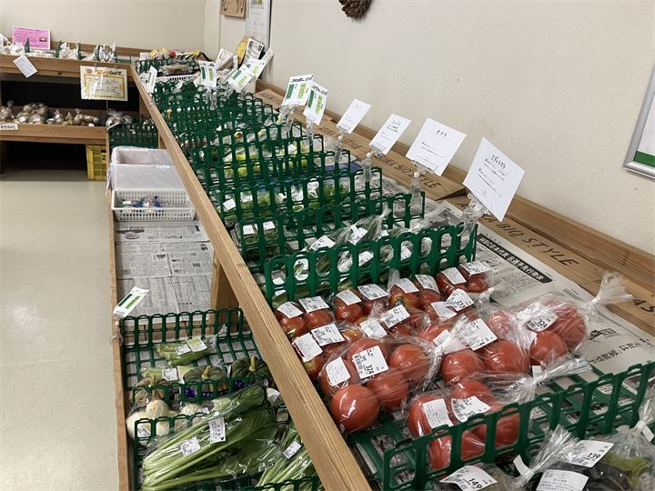
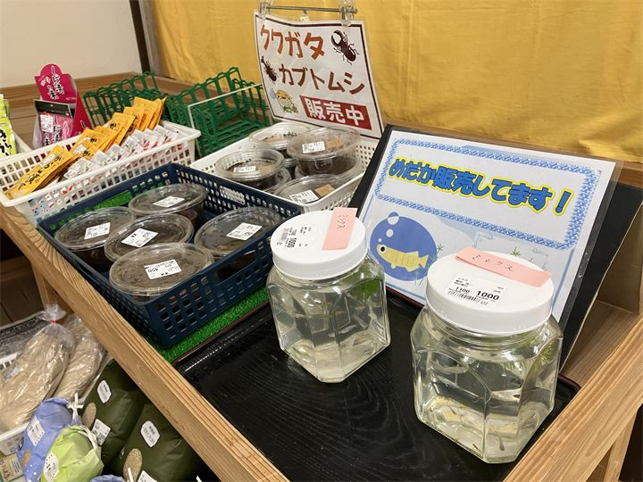

地元の新鮮な農産物
明日香村で育った野菜や果物など、旬の農産物を購入できます。

あすか夢の楽市は、明日香村の農産物や特産品を販売する地域密着型の直売施設です。 地元で採れた新鮮な野菜や果物、加工品などが並び、明日香ならではのお土産探しにもおすすめです。 観光の途中に立ち寄り、季節の味や地域の魅力を感じられるスポットです。
| 営業時間 | 9:00〜17:00 |
|---|---|
| 定休日 | 年末年始 |
| 料金 | 無料 |
| 所要時間 | 15〜30分 |
| 駐車場 | あり（無料） |
| アクセス | 近鉄飛鳥駅から徒歩約15分 |
| 地図 | 地図はこちら |

明日香村で育った野菜や果物など、旬の農産物を購入できます。

地元ならではの加工品や特産品が揃い、旅の思い出選びにも便利です。
あすか夢の楽市は、明日香村の農産物や特産品を販売し、地域の魅力を発信する直売施設です。 地元の生産者と観光客をつなぐ場所として、多くの人に利用されています。